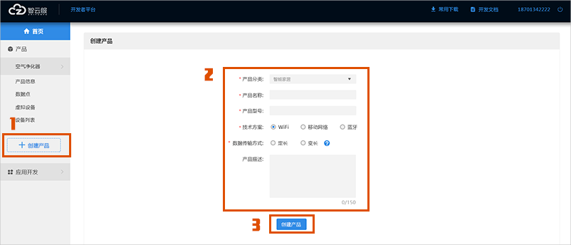

平台简介
智云服是由北京天创科技公司经过多年行业经验的积累和创新，推出面向创客企业、生产厂商、个人/企业开发者的物联网云服务平台，平台自主研发物联网接入模块和板卡，为有开发经验的用户提供自助开发工具和云端服务，为没有开发经验的用户提供一条龙定制化开发服务，实现产品或应用智能化。
智云服提供云端、设备端、用户端的全生命周期管理平台，开放的API接口、完善的SDK、APP Demo及完整的虚拟设备调试流程，真正帮助企业和个人快速建立各种物联网产品应用，降低技术门槛和研发成本，大大缩减技术开发的工作量，提升产品投产速度和竞争力，最终为用户创造更高的价值。
快速入门
名词解释
Product Key:产品标识码，开发者通过智云服后台创建新产品后，自动生成的一个32位字符串。在机智云的数据库中是一个唯一的号码，开发者将ProductKey写入设备主控MCU后，智云服通过此标识码对设备进行识别并自动完成注册。
接入流程
1.注册开发者
在使用智云服开发服务前，您需要先注册智云服开发者账号。根据页面要求，填写注册信息，注册成功后完善用户信息，可享受更多开发者服务功能。
2.创建产品
在开发者中心左侧栏目点击“创建产品”，在创建产品页面选择产品分类，输入产品名称、产品型号，选择设备接入方案、数据传输方式，产品描述等信息完成产品的创建。如下图：
3.创建数据点
只读：该数据点非控制，仅用于设备状态信息的查询或上报
可读：该数据点可控制，设备端可上报该数据点数据，云端/客户端可对该数据点进行下发控制
报警：该数据点非控制，当设备发生制定的状态改变或达到制定值时，上报报警信号
故障：该数据点非控制，当设备发生制定的状态改变或达到指定值时，上报故障信息
布尔型：表示两个状态：0或1，例如：值为正确或错误
枚举型：自定义的有限取值集合，定义某个功能有固定的若干个值
扩展性：二进制字符，可用于自定义数据类型或接入扩展元器件
分辨率：分辨率数值
单位：该功能的单位，例如：温度的单位可以设置为“摄氏度”
范围：自定义范围，数字是8位数
备注：更好的描述该功能。方便团队开发
4.设备/应用开发
当开发者创建好产品后，可参考智云服接口说明文档中心相关文档进行智能产品开发
设备开发
开发人员只需在正在开发的智能硬件上嵌入写好智云服连接协议的联网模块，即可通过智云服平台实现设备连网及智能化，连网模块包括WIFI、GPRS、移动网络等主流连网方式。
应用开发
开发人员只需在正在开发的手机App内集成智云服提供的App SDK，就可以连接智云服平台实现APP通过云端控制智能设备
5.调试产品
在调试产品过程中，开发调试的设备将连接智云服测试服务器，该服务器为开发者提供了完整的测试环境，以及智云服部分开放功能，待产品开发完成后需要申请发布时会将开发的产品重新部署到正式生产环境服务器上。
6.申请发布
当开发者的设备完成全部开发后需要进行产品发布，发布的产品将部署在智云服正式生产环境服务器上，同时为用户的设备分配独立的云端运行环境，确保设备24小时不间断在线以供用户使用。同时产品正式发布后，将享受更多智云服供的免费增值服务，包括：智能设备统计分析，开放平台展示以及各种无微不至的技术支持服务。
7.正式量产
产品发布后，厂家与智云服签署协议即可正式量产产品接入智云服，量产的产品会有智云服技术人员24小时监控，确保产品稳定运行。
虚拟设备和调试App
虚拟设备是智云服云端可自动生成的一个仿真智能硬件，可以模拟要开发或正在开发的智能硬件，来进行云端设备控制、手机APP控制、上报数据等需求。
当正式的智能硬件产品产品还未完全开发完成，就可以使用该“虚拟设备”与正式产品的控制APP进行调试和验证；当正式产品的控制APP还未完全开发好，就可以使用该“调试APP”对正式产品进行调试和验证，简单且方便，从而有效的加快研发周期，降低研发成本。
按照实际智能硬件产品的需求自定义功能，自动生成可响应的控制页面，有完整的用户注册、登陆和注销流程，可以完成智能硬件的入网配置、设备搜索、设备绑定、设备登录、设备控制、远程控制、状态更新、本地远程切换等基本操作和调试需求。
具体操作步骤如下：
进入开发者中心，在左侧栏选择虚拟设备，可看到虚拟设备使用指导、上报数据、消息log三个功能区域
虚拟设备使用指导：显示二维码，用于智云服调试APP绑定虚拟设备
上报数据：用于通过开发者中心的虚拟设备上报数据
消息log：用于显示接受APP发送的数据和虚拟设备上报数据
智云服调试APP绑定虚拟设备流程：虚拟设备二维码--打开APP扫码界面--扫码绑定虚拟设备
3.1 扫描虚拟设备使用指导的虚拟设备二维码
3.2 手机登陆智云服调试APP并绑定
3.3 调试APP控制虚拟设备，进入调试页面，开始调试
开发文档
App SDK介绍
功能介绍
使用流程
设备SDK介绍
功能介绍
使用流程
Web API介绍
功能介绍
使用流程